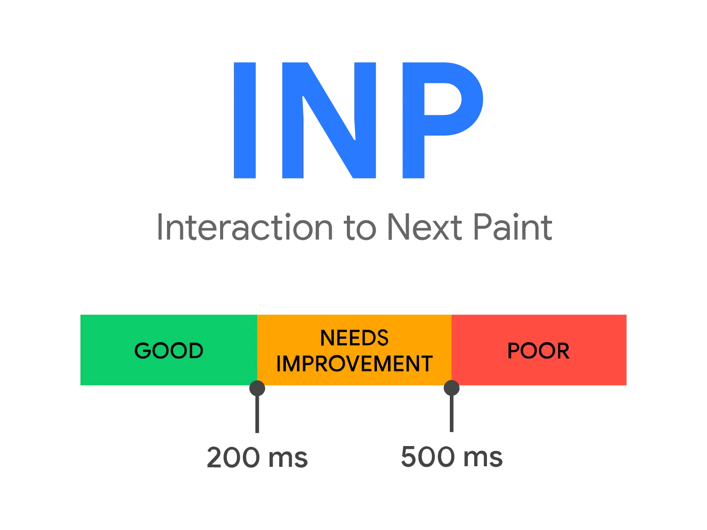

短答
交互到下次绘制量的是用户输入与页面绘出下一帧之间的延迟。
点筛选器、在零件号框里按键、或点开数据表手风琴，都可以是输入。这个指标看一次访问中的多次交互，并留意较慢的那些。它是线上页面响应性的 SEO 健康描述，不是 SEO 增长，也不是 GEO。
定义
交互到下次绘制简写为 INP，在 Core Web Vitals 里取代了首次输入延迟，成为响应性定义。首次输入延迟只看第一次输入。INP 看整次访问中的交互。延迟包括事件处理函数运行前主线程上的其他工作、处理函数本身，以及随后的绘制。本页的图复述公开区间。它们不是对 Mika、某位客户或本营销站的测量。
交互图把什么分开了
有用的轨迹会把输入延迟、事件处理和呈现下一帧的绘制分开。在目录页上，慢的部分常常是买家点击分面时主线程上已经在跑的长任务，而不是分面标签本身。SEO 健康可以说该模板的主线程正忙，并附上一条样例 URL。它不能说页面会有排名，也不应给一个从未在这里测量过的域名编造毫秒结果。

要检查什么
- 模板上买家真正使用的交互：筛选、标签、手风琴
- 输入到达时主线程上是否已有长任务
- 处理函数之后，下次绘制是否还在等渲染工作
- 没有继续把首次输入延迟当作当前定义
- 记录旁边有一条样例 URL
一个结构示例
买家在零件搜索里输入螺纹尺寸。处理函数很小，但第三方脚本还在执行。下一帧因此等待。健康记录点名脚本和搜索模板。它不要求团队在输入路径弄清楚之前先去发布更多分类页。
它不声称什么
更短的交互延迟不保证排名或引用。Mika 不保证 INP 的结果，本页也不公布任何线上站点的实测延迟。
Mika Visibility 把它归到哪里
Mika Visibility 把响应性放在 SEO 健康。尚未占据的意图覆盖留在 SEO 增长。可答性留在 GEO 轨道。较高的健康读数不会自动变成增长分数。长任务被拆开或延后之后，再审计会再看一次模板。
常见问题
交互到下次绘制量的是什么？
交互到下次绘制量的是用户输入与页面绘出下一帧之间的延迟。
INP 是否取代了首次输入延迟？
交互到下次绘制简写为 INP，在 Core Web Vitals 里取代了首次输入延迟，成为响应性定义。
本页有没有给出实测延迟？
Mika 不保证 INP 的结果，本页也不公布任何线上站点的实测延迟。
下一步
做一次结构化的 SEO + GEO 审计，查看健康发现、增长缺口和可以执行的蓝图。
更清晰的实体、答案、证据和上下文，会让页面更容易被理解与引用。任何回答产品中的结果都不作保证。